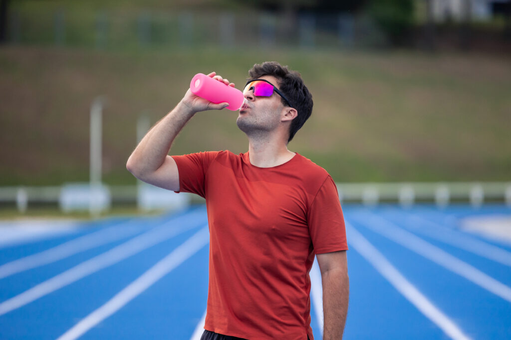
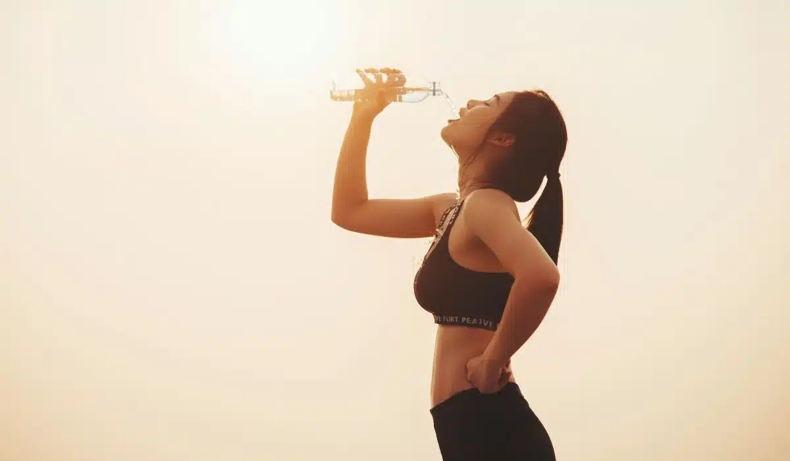
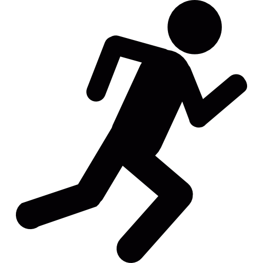

Dicas de Hidratação para Corrida
A hidratação é essencial para garantir um bom desempenho durante a corrida. Consumir água corretamente
ajuda a diminuir o cansaço, aumenta a resistência e previne problemas como tontura e câimbras.
💧 Antes da corrida
- Procure se hidratar ao longo do dia, não somente antes de correr.
- Não comece o treino sentindo sede.
- Beba água cerca de 30 minutos antes da atividade.

🏃 Durante a corrida
- Em atividades mais longas, beba pequenas quantidades de água.
- Evite ingerir grandes volumes de uma só vez.
- Em treinos prolongados, o uso de isotônicos pode ser uma boa opção.
🧊 Depois da corrida
- Reponha os líquidos perdidos ingerindo água.
- Prefira frutas ricas em água, como melancia e laranja.
- Fique atento à recuperação do seu corpo após o exercício.

⚠️ Cuidados importantes
- Evite tanto a desidratação quanto o consumo excessivo de água.
- Observe a cor da urina (quanto mais clara, melhor hidratado você está).
- Ajuste a ingestão de líquidos de acordo com o clima e intensidade do treino.
Manter-se bem hidratado melhora o rendimento, aumenta a disposição e torna a prática da corrida mais segura e eficiente.
